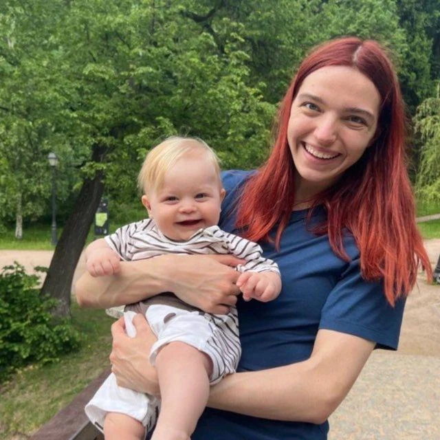
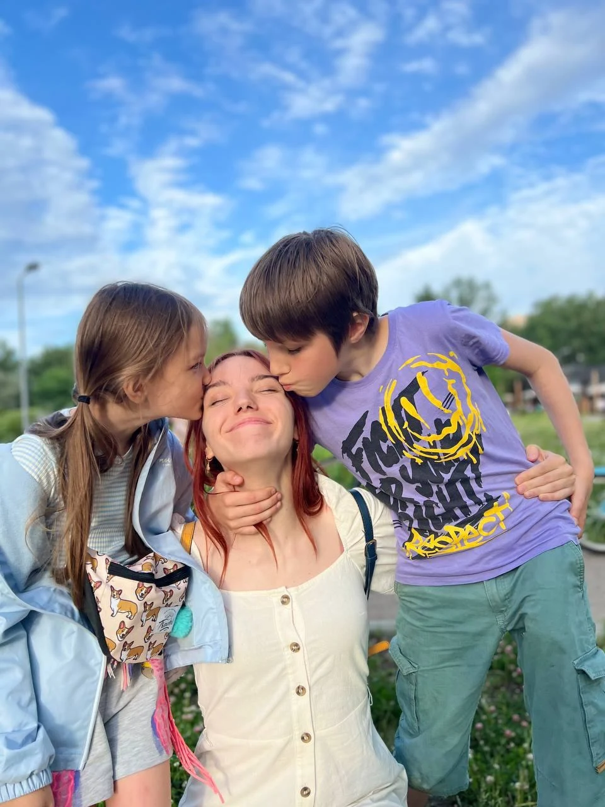
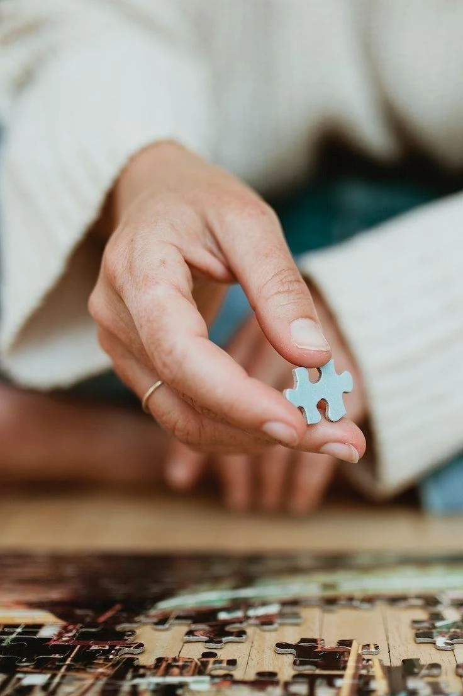

ПОНИМАЮ
Сначала — ваша семья
Ритм жизни, привычки ребёнка, взгляды на воспитание. Мне важно узнать вас, прежде чем знакомить с кем-то ещё.
Поиск, собеседования и проверки — на мне.
Вам остаётся познакомиться и выбрать человека,
с которым хочется быть одной командой.

“Не просто закрыть
Анастасия, ваш специалист по подбору
вакансию, а найти
своего человека.


Знакомлюсь с вашей семьёй
и провожу интервью под ваш запрос,
чтобы найти близкого вам человека.
Ритм жизни, привычки ребёнка, взгляды на воспитание. Мне важно узнать вас, прежде чем знакомить с кем-то ещё.
Рассказываю кандидату о семье и задаю вопросы про ваши реальные ситуации. Ищу совпадение в подходе, а не только в резюме.
Передаю подробный профиль, личные комментарии и рекомендации. Обсуждаю с вами каждого кандидата и помогаю принять решение.
Примеры тем, которые я разбираю
с кандидатом на интервью.
«Как вы поможете малышу привыкнуть к новому взрослому, если мама рядом?»
Обсуждаем бережную адаптацию, режим и то, как няня замечает потребности ребёнка.
С 2022 года подбираю нянь для семей. Работала в двух агентствах, а сейчас веду семьи индивидуально — от первого разговора до выхода няни на работу.
До подбора пять лет работала с детьми: няней, тренером и педагогом. Поэтому хорошо понимаю и ожидания родителей, и то, что важно человеку, которого вы приглашаете в семью.
Мне важно не просто найти няню.Больше о моём подходе ↗
Мне важно, чтобы у вас всё сложилось.
Настя помогла нам найти няню для дочки. Очень внимательная, задаёт правильные вопросы, быстро понимает, что важно именно нашей семье.
Мы искали няню через агентства, но Настя подобрала нам кандидата из своей базы. Очень благодарны за подход и поддержку!
Добрый вечер! Отлично, Настя, спасибо! Юра вчера весь вечер спрашивал, когда вы ещё придёте, кроме сегодня 🙂
Отзывы из предоставленных макетов. Тексты и согласия на публикацию подтвердим перед запуском рабочей версии.
От «нам нужна помощь»
до «как хорошо, что мы нашли друг друга».
Знакомимся. Вы рассказываете о ребёнке и желаемой помощи.
Определяем задачи, график и то, что важно именно вам.
Отбираю кандидатов, собеседую и даю личные рекомендации.
Вы встречаетесь с кандидатами. Обсуждаем ваши впечатления.
Остаюсь на связи после выхода няни. Гарантия замены — 6 месяцев.
Я ищу и отбираю кандидатов под согласованный запрос, провожу интервью о задачах вашей семьи и проверяю рекомендации. Затем передаю подробные профили и объясняю, почему предлагаю вам каждого человека.
Обсуждаем обратную связь, уточняем пожелания и продолжаем поиск. Количество кандидатов не ограничено. Если замена потребуется после начала работы, действует гарантийный срок 6 месяцев.
Взять подбор целиком на себя
или помочь вам найти няню самостоятельно.
Беру поиск на себя и сопровождаю вашу семью на всех этапах.
По макету: полная оплата после 1–2 пробных недель. Ориентир по сроку поиска — 1–1,5 месяца.
Помогу разобраться в запросе и подготовиться к самостоятельному поиску.
Тарифы и условия перенесены из PDF-макета. Перед рабочим запуском подтвердим их актуальность.
Можно не знать, с чего начать.
Для этого и есть первый разговор.
Каждое интервью проходит в контексте вашей семьи: я рассказываю о ваших задачах и разбираю конкретные ситуации. Вы получаете не только анкету, но и мои комментарии о кандидате.
Да. Начнём с возраста ребёнка, вашего ритма жизни и того, с чем нужна помощь. Сформулируем запрос вместе.
Да, я сопровождаю семью после начала работы няни и помогаю обсудить возникающие вопросы. Гарантия бесплатной замены действует 6 месяцев.
Расскажите немного о вашей семье.
Я помогу понять, с чего начать.